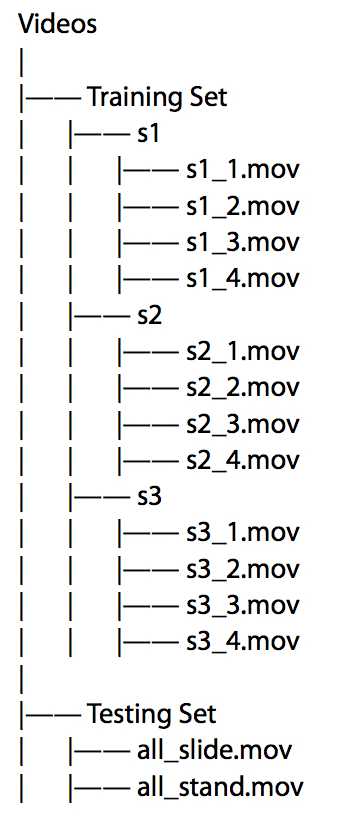
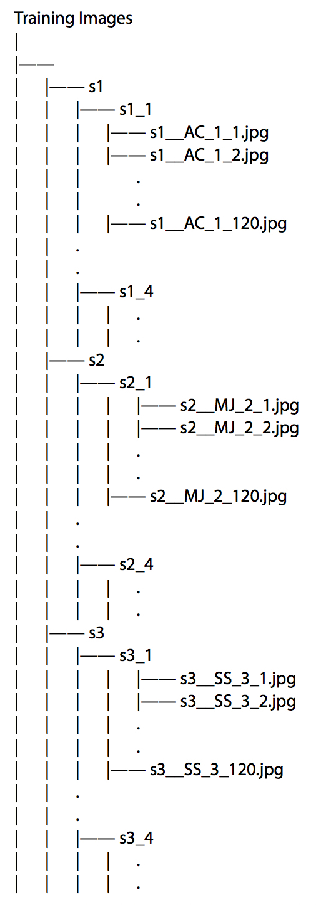

Welcome

Hi, welcome to the SEAS-FR-DB!
Face Recognition Database for Videos with 1080p and 30fps.
You can check More Details by scrolling down!
Description
The database is designed for providing high-quality HD multi-subject banchmarked video inputs for face recognition algorithms. The database is a useful input for offline as well as online(Real-Time) Video scenarios. The database has primarily there classified subjects (3) and two not-classified(unknown/un-labeled) subjects available in 30fps - High Definition Video (Full HD - 1080p) video.
Hope you love this database. We would love to hear your inputs. Share your amazing work with us!
Database
3 Test Subjects4 Videos for Each Subject
For Each Video, Duration : 4 sec , Total Frames : 120 frames
Videos

To the left is the File Hierarchy of Videos in our Database. There are 2 sub directories Training Set and Testing Set.
Training Set has 4 sub-folders s1 to s3 each having videos of subjects 1 to 3 respectively.
Testing Set has 2 videos that are different from the Training Set.
For any video file starting with 's....mov',
Format : sX_V.mov ; Where, X = Subject No & V = Video No
Example:
For Subject - 3, Video-2:
Therefore,
X = 3,V = 2, F = S, L = S, Z = 1 - 120
File Names would be : "s3_2.mov"
Which is at Location - "SEAS-FR-DB/Videos/Training Set/s3/s3_2.mov"
Training Images

To the left is the File Hierarchy of Training Images in our Database. There are 3 sub directories for each Subject.
Each directory has 4 other sub-folders each having extracted images of the corresponding video of that subject from the
Training Set Videos.
For any image file starting with 's... .jpg',
Here, Format : sX__FL_V_Z.jpg ;
Where,
X = Subject No
F = Subject's First Name Initial
L = Subject's Last Name Initial
V = Video No (Video from Testing Set Directory)
Z = Frame No
Example:
For Subject - 3, Video-2:
Subject Name is : Saumil Shah
Therefore,
X = 3,V = 2, F = S, L = S, Z = 1 - 120
File Names would Range from,
"s3__SS_2_1.jpg"
to
"s3__SS_2_120.jpg"
Training Video is at Location - "SEAS-FR-DB/Videos/Training Set/s3/s3_2.mov"
Subjects
3 Trained Subjects that act as Known Subjects2 Subjects that act as Unknown Subjects
Subject1 Subject2 Subject3
Subject4 Subject5
Contributors
Acknowledgements
We sincerely thank Dr. Ratnik Gandhi, Dr. Mehul S. Raval for their constant guidance and support for our Face Recognition project and SEAS-FR-Database.
Get the Database
Benchmarking Details can also be found at Github.
If you use this database, or refer to its results, please cite us as per following:
Saumil Shah and Axat Chaudhary and Mayank Jobanputra and Ratnik Gandhi. "SEAS Face Recognition Database for Video". 2016